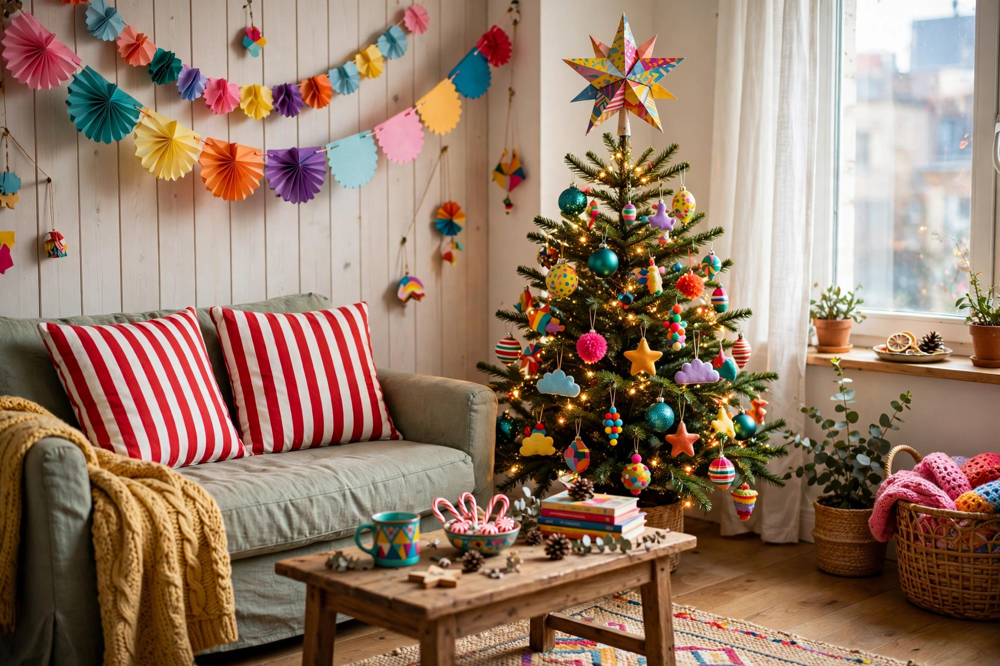

Christmas Decor
Whimsical Holiday Decor — 12 Playful Ideas for a Small Flat
Intro
Whimsical holiday decor is Christmas with a sense of humour. It is candy colours instead of traditional red, pom-poms instead of pinecones, a nutcracker on the shelf instead of a serious wreath. It suits a small flat perfectly, because whimsy does not need space — it needs imagination. One funny ornament on a plain tree does more than a whole box of serious baubles.
This guide has 12 whimsical holiday ideas for a small flat. Each idea lists what it costs. Most of these are cheap, handmade or found in a discount store, and none of them takes itself seriously. Start with the colour, then add one funny thing per room, and stop before it becomes a toy shop.

1. A candy-colour palette: pink, mint and gold — $10–$18
Whimsy starts with colour. Swap the traditional red and green for candy pink, mint green and gold, and the whole flat feels playful before a single ornament goes up. Buy one pack of pink baubles and one pack of mint ones, about $6 each, and mix them with gold ribbon. The candy palette works best against white walls and light furniture, where the colours pop. Keep the lights warm white, so the pink and mint stay soft instead of garish.
2. Pom-pom garlands in every colour — $5–$10
A pom-pom garland is the happiest decoration you can own. String colourful pom-poms — pink, mint, yellow, white — onto thread and drape them across the mantel, the window or the tree. A bag of mixed pom-poms costs about $4 and makes a garland 2 metres long. They are light, soft and impossible to break, which makes them perfect for a small flat with a cat or a small child. Make two garlands: one for the mantel, one for the tree.
3. A nutcracker on the shelf — $8–$15
One nutcracker, about 30 cm tall, standing on a shelf or the mantel, is the classic whimsical decoration. Choose a colourful one — red coat, tall hat, big grin — and let it stand alone. A small nutcracker costs about $10 in a discount store. It does not need company: one nutcracker is charming, five nutcrackers is a collection. Put it where you will see it every morning, and it will make you smile all December.
4. Mismatched ornaments on purpose — $5–$12
Whimsical trees break the rules on purpose. Instead of matching baubles, hang a mix: a pink flamingo, a tiny teapot, a glitter star, a striped candy cane, a small disco ball. Buy three or four funny ornaments for about $3 each, and mix them with your plain baubles. The rule is that nothing matches — and that is the point. A mismatched tree looks like it belongs to a real person, not a shop window, and guests always ask about the strangest ornament.
5. A gingerbread house on the table — $8–$15
A gingerbread house, bought as a kit or made from biscuits, is decoration and dessert in one. Build it on a tray in the middle of the table, ice the roof with white icing, and add a few gumdrops as decoration. A kit costs about $10. It sits on the table all December, slowly losing a gumdrop or two, and gets eaten on Christmas Day. It is the only decoration that disappears on purpose — and the one everyone remembers.
6. Striped candy-cane ribbon everywhere — $4–$8
Red-and-white striped ribbon is the fastest way to make anything look whimsical. Tie it around the tree in two loose loops, use it to hang the wreath, wrap it around candle holders and tie it in bows on the backs of chairs. A roll of striped ribbon costs about $5 and does the work of five different decorations. The stripes read as Christmas from across the room, even in a small flat where the tree is barely visible from the door.
7. Funny stockings with names on them — $5–$12
Whimsical stockings are not plain knit — they have faces, pom-poms or names stitched on in bright thread. Buy plain stockings for about $3 each and sew or glue on a pom-pom trim and a name tag in felt letters. A pack of felt letters costs about $3. Hang one per person on the mantel, and the stockings become part of the joke. They also solve the eternal problem of whose stocking is whose.
8. A tiny tree in an unexpected place — $8–$15
A second, tiny tree — about 30 cm tall — in an unexpected place is pure whimsy. Put it on the bathroom shelf, on the kitchen counter or on your desk, decorated with three or four miniature ornaments. A tiny tree costs about $8. It makes people laugh when they find it, and it spreads Christmas into rooms that usually get nothing. One tiny tree per flat is enough; two is a theme, three is a habit.
9. Paper chains in bright colours — $2–$5
Paper chains are the oldest whimsical decoration, and they still work. Cut bright paper — pink, mint, yellow, turquoise — into strips, loop them into chains and drape them across the ceiling or along the wall. A pack of coloured paper costs about $3 and makes chains long enough for a whole flat. Children love making them, they weigh nothing, and they come down in seconds. Hang one chain across the living room and one in the hallway.
10. A wreath made of ornaments, not pine — $10–$18
Instead of a pine wreath, make one from baubles. Glue colourful baubles — pink, mint, gold, silver — onto a wire ring until it is full, and hang it on the front door or above the mantel. A wire ring costs about $3 and a bag of mixed baubles about $10. The ornament wreath is shiny, colourful and completely unlike anyone else's wreath. It also lasts for years, because baubles do not dry out like pine.
11. Fairy lights in the jars — $5–$10
Put a string of battery fairy lights inside a glass jar, a vase or a bottle, and it becomes a glowing decoration that sits anywhere. Two or three glowing jars on a shelf, a windowsill and the bedside table spread light through the whole flat without a single wire. A string of battery lights costs about $4 and the jars are free from the kitchen. Use warm white lights in pink jars and cool white in clear ones, for a soft candy glow.
12. A "naughty or nice" list on the fridge — $0–$3
The smallest whimsical decoration costs nothing. Write a "naughty or nice" list on a piece of card and stick it on the fridge, with funny entries for everyone in the flat. A pack of coloured card costs about $2. It is not a decoration anyone photographs, but it is the one everyone reads. Change one entry a week through December, and the list becomes a running joke. Whimsy is not about buying things — it is about the flat feeling like it is in on the joke.
Conclusion
Whimsical holiday decor is Christmas that does not take itself seriously: candy colours, pom-poms, one nutcracker, mismatched ornaments and a gingerbread house on the table. In a small flat, whimsy works because it is light, cheap and fun — and because one funny thing per room is enough. Pick your colour, add your one funny ornament, and let the flat laugh a little.
Budget recap
- Candy baubles + striped ribbon: ~$15 - Pom-pom garland + paper chains: ~$8 - Nutcracker + tiny tree: ~$18
Total for a whimsical holiday: ~$25–$40 — start with the candy colours, then the pom-poms.
Pinterest pin titles
- Whimsical Holiday Decor — 12 Playful Ideas for a Small Flat
- 12 Whimsical Christmas Ideas That Make a Tiny Flat Feel Fun
- Candy Colours & Pom-Poms: 12 Whimsical Holiday Ideas